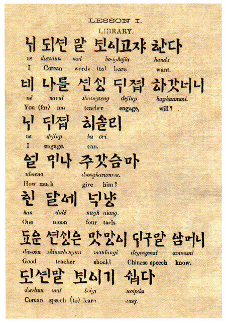

The introduction of the book captures: "The following lessons are intended to introduce to the Corean language those desirous to prepare for the official, mercantile, and chiefly the missionary intercourse with Corea, which cannot be of distant date. The Corean words are given in the Corean alphabet in syllables, under which is the Corean pronunciation in Roman letters, and the interpreta tion in English, according to the Corean idiom , viz. nom . obj, verb, negative."